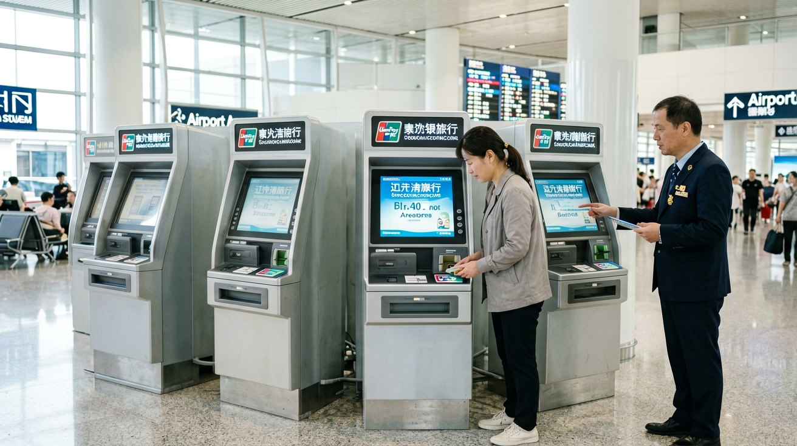
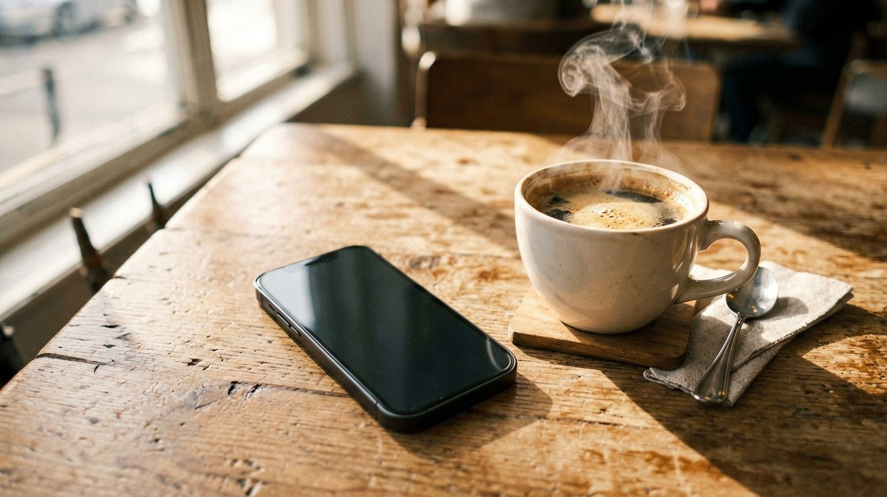
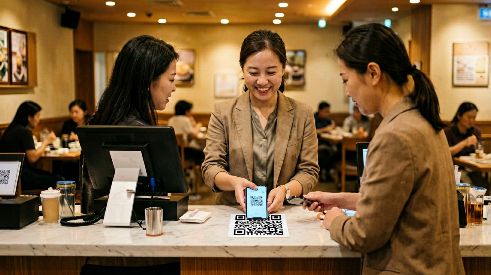
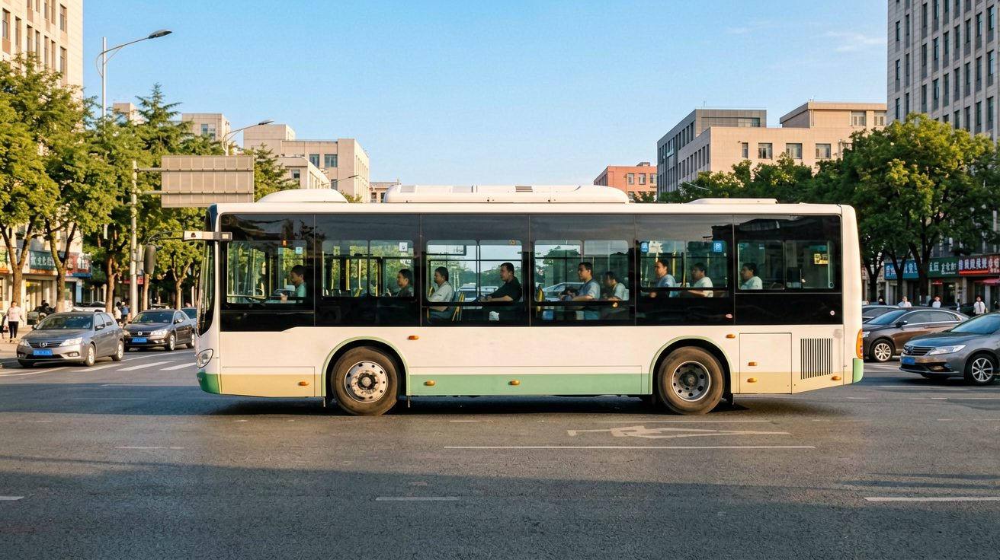

Last updated: June 2026.
You have set up Alipay and WeChat Pay. You have linked your foreign bank card. But the real test is not the registration step — it is everyday use. A payment fails because your VPN is on. A QR code scan shows the wrong amount. Your phone battery dies. This article helps you avoid these pitfalls.
China is a mobile-payment-dominant society, but cash still has its irreplaceable moments. The street vendor selling candied hawthorn skewers may not have a QR code. A stall inside a scenic area may have a code that will not scan. A taxi driver may tell you the machine is broken. These situations are real. Carry 300 to 500 RMB in cash, mostly in small bills of 20 RMB or less.
The most convenient place to withdraw cash is an ATM in the airport arrival hall. All ATMs with the UnionPay logo accept foreign Visa and Mastercard withdrawals. The exchange rate is determined by your card-issuing bank's daily rate, which is usually better than what currency exchange counters offer. Some card issuers charge a foreign withdrawal fee — confirm this with your bank before departure. ATMs in the city centre work equally well, but do not wait until your cash runs to zero before withdrawing more.

This is the easiest trap to fall into when travelling in China — and it can leave you baffled. Everything looks set up correctly. Your card has sufficient balance. But Alipay or WeChat Pay keeps showing "transaction failed" or "network error."
The reason is simple: Alipay and WeChat Pay detect your network environment. If your IP address comes from an overseas VPN node, the risk-control system rejects the transaction. The fix — turn your VPN off before paying, then turn it back on afterwards.
If you need to use Google Maps and scan a QR code at the same time, here is the method: load your route with the VPN on, turn it off to pay, then turn it back on. A better approach is to download offline maps in advance — navigate without a VPN and pay without interruptions.

Beyond the VPN issue, several other reasons can cause a payment to fail at the worst possible moment:
Single-transaction or daily limit reached. Foreign bank cards on Alipay and WeChat Pay typically have a single-transaction limit of 5,000 to 30,000 RMB, and a daily cumulative limit of 10,000 to 50,000 RMB. The exact limits depend on your card issuer and the specific payment scenario. Large purchases such as hotel deposits or high-end restaurant bills may hit these limits. If a transaction fails, try splitting it into smaller amounts or using a second card.
Card issuer blocked the transaction. Some foreign banks flag transactions in China as suspicious and block them automatically. If your payment is declined and you have ruled out the VPN cause, check your banking app for a fraud alert or contact your bank to whitelist China transactions before your trip.
Network instability. China's mobile networks can be inconsistent in certain indoor areas — underground metro stations, old shopping malls, or rural scenic spots. If your payment loads indefinitely, move to a spot with better signal, or switch between mobile data and Wi-Fi.
Merchant QR code is for local users only. Some small vendors use personal WeChat or Alipay QR codes that only accept transfers from Chinese bank accounts. If the QR code triggers an error you cannot read, the simplest workaround is to pay in cash or ask the vendor to present a different code — specifically the merchant collection QR code, which works with foreign cards.

Refunds on Alipay and WeChat Pay are straightforward in principle but can take longer than expected. When a merchant initiates a refund, the amount goes back to the original payment card. The process is the same whether you paid with a foreign card or a Chinese one — but the refund timeline differs.
For foreign card payments, refunds typically take 3 to 15 business days to appear in your account. This is because the funds travel through the international card network's refund processing pipeline, which is slower than domestic refunds that often complete within hours. If a refund has not appeared after two weeks, contact the merchant first to confirm the refund was initiated, then check with your card-issuing bank.
A practical tip: when making large purchases during a short trip — hotel deposits, tour bookings, or expensive electronics — be aware that any refund may not arrive before you leave China. Use a card whose app lets you track pending refunds, and keep screenshots of every refund confirmation page the merchant shows you.

A dead phone in China is more serious than in most countries. Without your phone, you cannot pay, you cannot navigate, you cannot call a taxi, and in some hotels you may even struggle to unlock your room if it uses a smart app. You need a backup plan.
Keep cash as your emergency layer. The 300 to 500 RMB mentioned earlier is precisely for this scenario — enough for a taxi back to your hotel and a meal. Keep it in a separate pocket from your phone so you do not accidentally spend it.
Carry a power bank. A compact 10,000 mAh power bank adds minimal weight to your day bag and gives you two full phone charges. Look for one with a built-in cable to reduce clutter. Most cafes and fast-food chains in China have power outlets, but they are often occupied, and you may not always find a seat when you need one.
Write down your hotel address in Chinese. On a small piece of paper kept in your wallet, write down your hotel name, address, and phone number in Chinese characters. If your phone dies and you need to ask for directions or hail a taxi, this piece of paper becomes your lifeline. Hotel front desks can print one for you — ask on your first day.
Memorise one emergency number. 110 for police. Operators can connect you to English-speaking assistance if needed.
This article is based on information as of June 2026.
Sources
Payment platform policies and limits may change. Verify current terms in your Alipay or WeChat app before your trip.